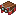

#c:dyed/red
物品标签 · 12 个已收录成员
标签成员 (12)
红色玻璃门
glassential:red_glass_door红色玻璃活板门
glassential:red_glass_trapdoor红色收纳袋
minecraft:red_bundle
minecraft:red_harness 红色雪怪皮毛
红色雪怪皮毛
eternal_starlight:red_yeti_fur 红色雪怪皮毛地毯
红色雪怪皮毛地毯
eternal_starlight:red_yeti_fur_carpet 红色横旗
红色横旗
supplementaries:flag_red 红色礼物盒
红色礼物盒
supplementaries:present_red 红色陷阱礼物盒
红色陷阱礼物盒
supplementaries:trapped_present_red 红色蜡烛烛台
红色蜡烛烛台
supplementaries:candle_holder_red 红色遮阳棚
红色遮阳棚
supplementaries:awning_red 红色彩旗
红色彩旗
supplementaries:bunting_red
glassential:red_glass_door红色玻璃活板门
glassential:red_glass_trapdoor红色收纳袋
minecraft:red_bundle

红色挽具minecraft:red_harness
红色雪怪皮毛eternal_starlight:red_yeti_fur
红色雪怪皮毛地毯eternal_starlight:red_yeti_fur_carpet
红色横旗supplementaries:flag_red
红色礼物盒supplementaries:present_red
红色陷阱礼物盒supplementaries:trapped_present_red
红色蜡烛烛台supplementaries:candle_holder_red
红色遮阳棚supplementaries:awning_red
红色彩旗supplementaries:bunting_red
使用该标签的配方
无